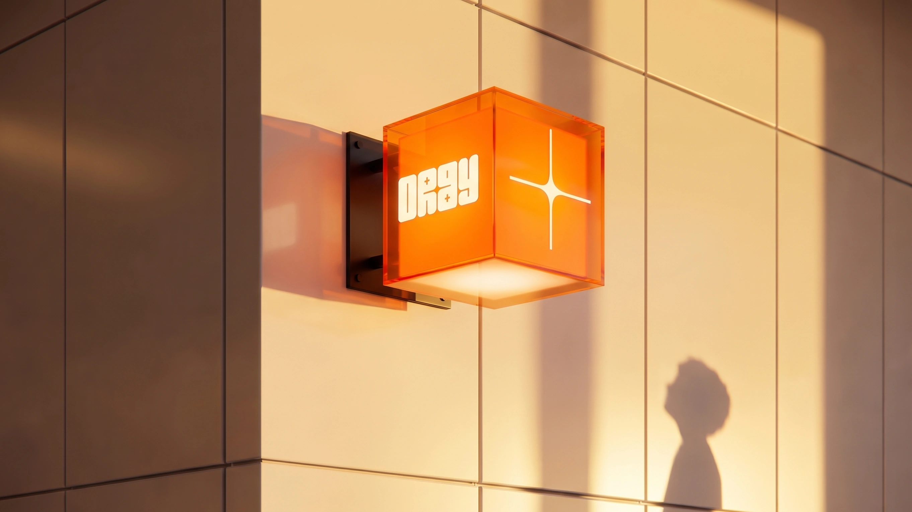
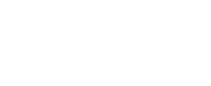
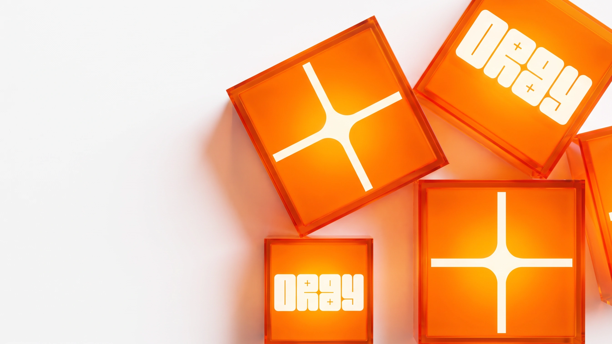
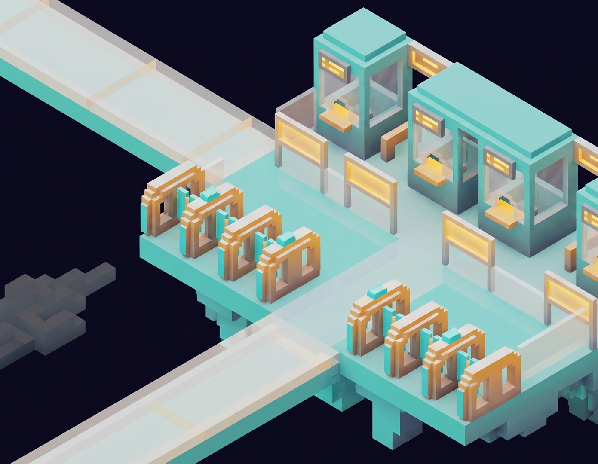

“아동이 보호자 없이 혼자 항공기를 이용할 때 승무원이 이동 전 과정을 관리해주는 서비스”
Pain Point
페인포인트 01
페인포인트 02
페인포인트 03

솔루션 01
ORBY 웨이파인딩 서비스는 만 11세 아동의 신체·인지 규격에맞춘 전용 입체 사인을 기반으로 합니다. 이동 동선 전반에 동일한 심볼을 연속 배치하여 복잡한 인파 속에서도 시각적 안도감을 제공하며, 아동이 스스로 길을 포착하고 주체적으로 이동하게 돕습니다.

솔루션 02
기내에서 즐기는 픽셀 아트 형태의 사전 탐험 게임입니다. 하차부터 대기실까지의 공항 여정을 미리 가상 체험하도록 설계되어 공간에 대한 불확실성을 해소합니다. 아동에게 ‘스스로 해낼수 있다’는 주체적인 지각된 통제감과 자신감을 부여합니다.